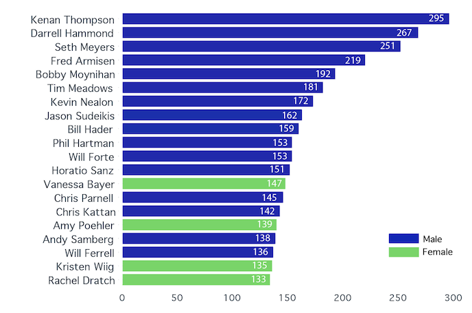

Cast members in Saturday Night Live come and go more frequently than the women in the chorus of Feeltwood Mac's 'Dreams' on repeat. Although securing a spot in the cast is a daunting task, keeping it doesn't always guarantee a prominent presence.
Many comedy legends, from Chevy Chase to Bill Murray and from Gilda Radner to Tina Fey made a name for themselves as cast members of the show, but over its 45 years on the air, SNL has one star that, like Rose in Titanic, will never let go. Kenan Thompson's job security has become its own joke.
The All-Timers
The top 50 SNL cast members by their number of seasons
Source: Kaggle, NBC
Women in SNL
While SNL has been the starting ground for the careers of successful female comedians such as Julia Louis-Dreyfus, Amy Poehler, the aforementioned Fey and the Oscar-nominated Kristen Wiig, it has a somewhat problematic history of letting its female cast members share in the glory of their male counterparts. The question "are women funny?" has plagued the comedy world for too many decades, and despite the genuine sense of discovery and support it has provided for some of its female cast members, the numbers show that SNL hasn't given them an equally visible platform.
In fact, you'd have to go all the way to the 13th place to come across the first woman in the list of most frequently featured cast members in weekly episodes. That woman is Vanessa Bayer, and she is followed by Poehler, Wiig and Rachel Dratch - and they are all post-2000s additions to the cast.
TOP 20 SNL CAST MEMBERS, BY NUMBER OF EPISODE APPEARANCES
Here is the full list of the 10 most frequently featured female cast members in the show's entire history, which doesn't include any comediennes from the early, wild, man-centric days of SNL.
Top 10 female SNL cast members, by number of episode appearances